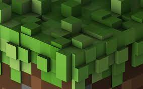

➢ Valorant
➢ Minecraft
Valorant is a team-based first-person tactical hero shooter set in the near future. Players play as one of a set of Agents, characters based on several countries and cultures around the world. In the main game mode, players are assigned to either the attacking or defending team with each team having five players on it.
Minecraft is a 2011 sandbox game developed by Mojang Studios. In Minecraft, players explore a blocky, procedurally generated, three-dimensional world with virtually infinite terrain and may discover and extract raw materials, craft tools and items, and build structures, earthworks, and machines. Depending on their chosen game mode, players can fight hostile mobs, as well as cooperate with or compete against other players in the same world. Game modes include a survival mode (in which players must acquire resources to build in the world and maintain health) and a creative mode (in which players have unlimited resources and access to flight).